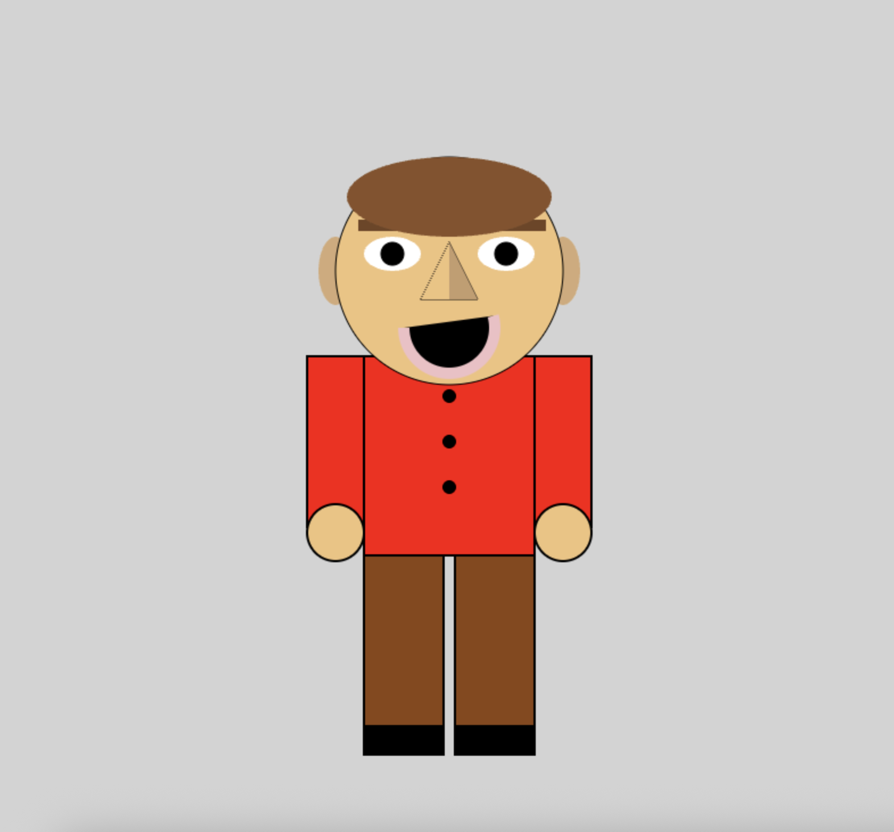
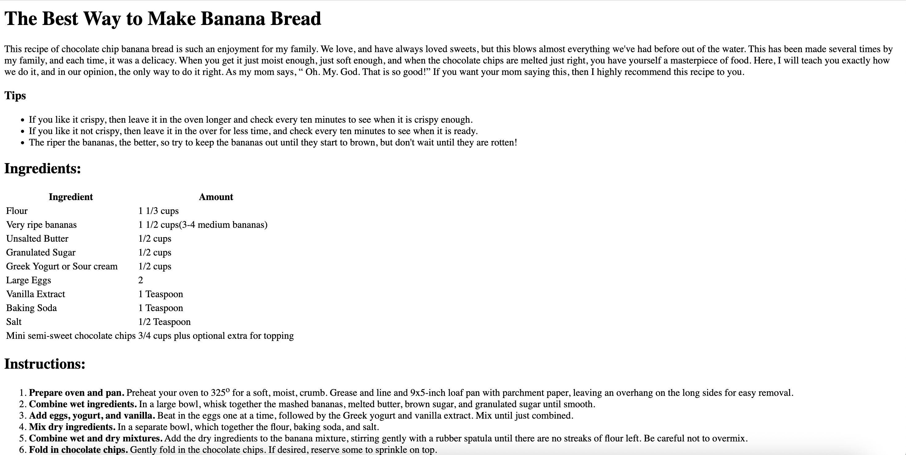
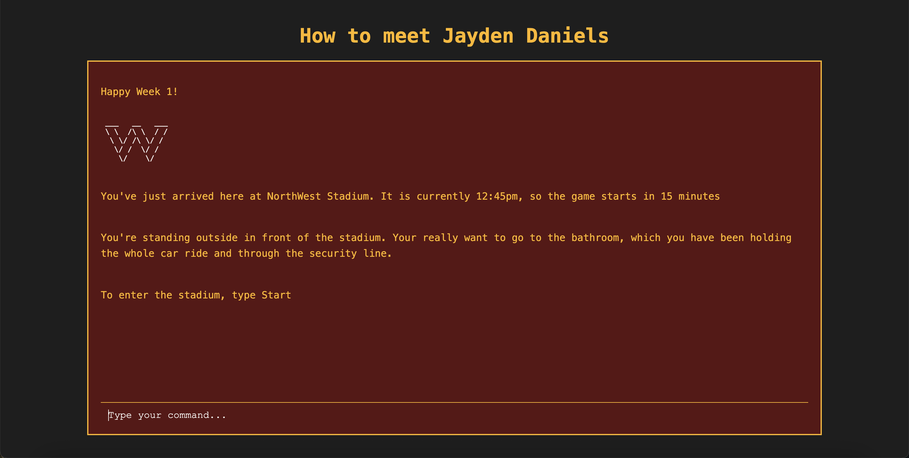
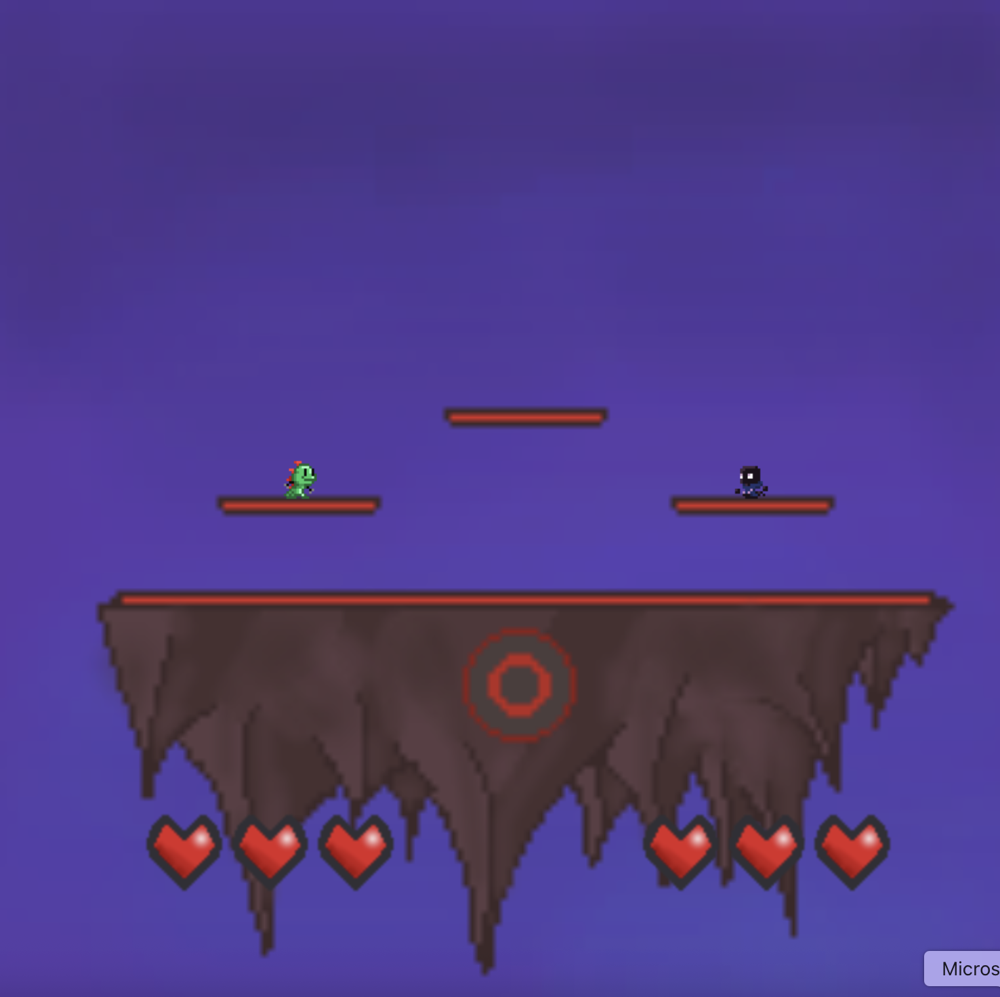

Jonah Kauffman
Here are some of the many projects I have done!
Self Portrait Project
- I created a self portrait out of javascript shapes
- This was very complex and required a lot of time
- Overall good, however, the time it took was a lot

Recipe Project
- I created two different recipes for bananas and crepes
- This was a very fun project, as I chose 2 desserts and made the recipes for them
- Overall, this was very entaertaining and will be a useful website for the future

Personal Game Website
- I created a test-based game website about Jayden Daniels and the Commanders
- This was a very complex project, and took a lot of time
- Overall, the end result was amazing and I am very happy with what I created

Island Battle Group Game
- My group and I created a full on game using javascript
- It took a very long time and required hundreds of lines of code
- Overall, it was a long process, but the end result was really cool
